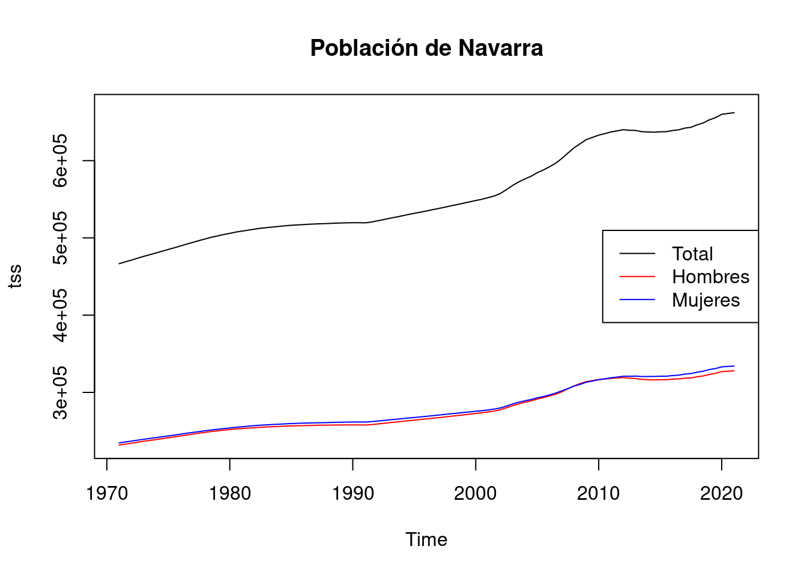
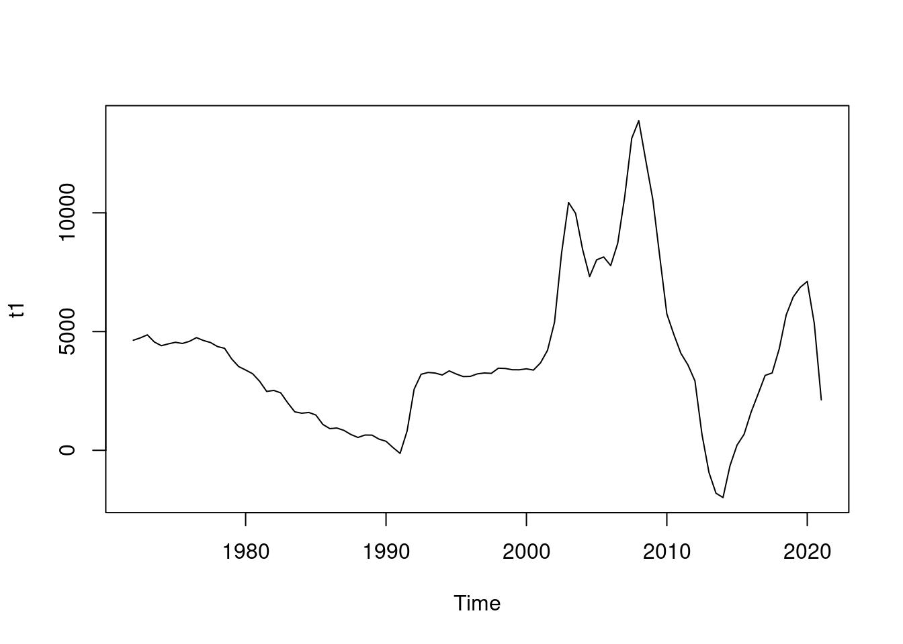
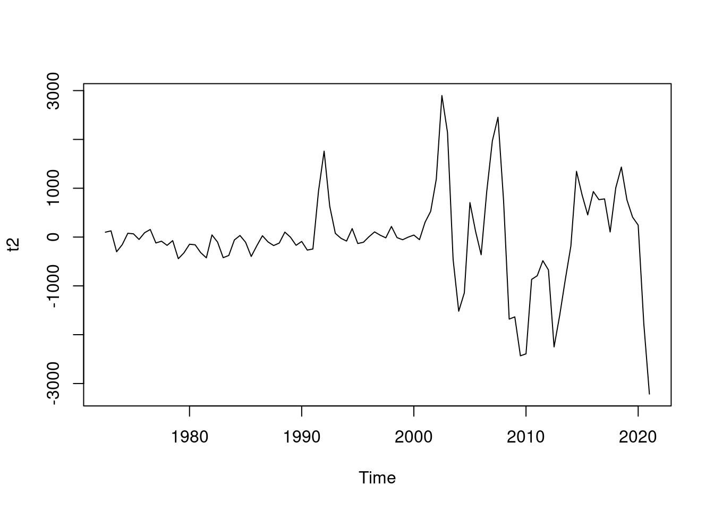
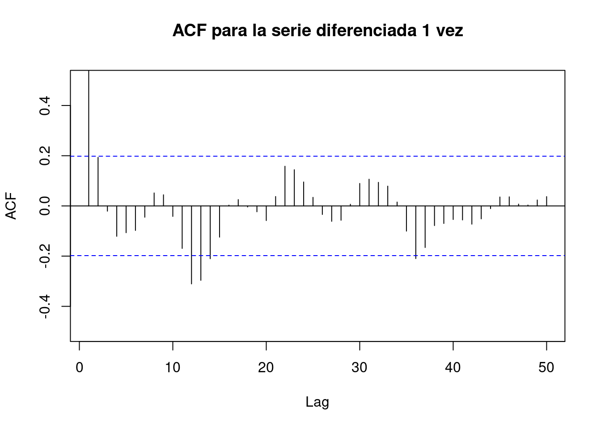
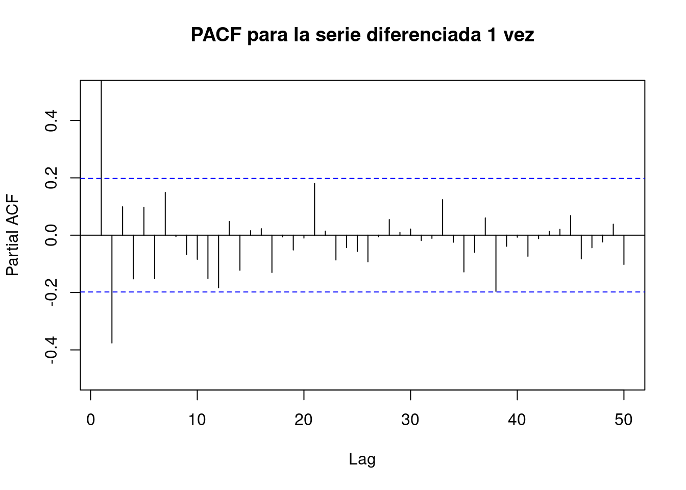
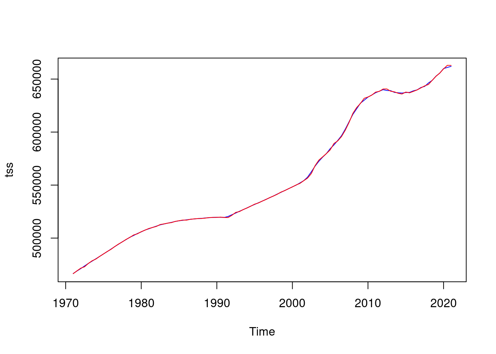

# LibreriasSeries Temporales - ARIMA: navarra
Introducción
dataset
En este cuaderno vamos a analizar el dataset llamado navarra.xlsx. Este dataset presenta los datos de población de la Comunidad Autónoma de Navarra a 1 de Enero y 1 de Julio de cada año desde 1971. La serie temporal se encuentra desagregada por Sexos, mostrando para Hombres, Mujeres y el total de la población. El objetivo de este estudio es intentar modelar dichas series mediante un modelo ARIMA.
Concretamente en este dataset tenemos las siguientes variables:
- ccaa: Navarra siempre.
- sexo: Hombres, Mujeres, Total.
- fecha: Fecha correspondiente.
- poblacion: Cifras de población.
Cargamos entonces el conjunto de datos:
data <- readxl::read_excel("../../../../files/navarra_series.xlsx",
sheet = "Datos", col_types = c(
"date",
"numeric", "numeric", "numeric"
)
)
data$Total <- data$`Pobl. Total`
data$H <- data$`Pobl. Hombres`
data$M <- data$`Pobl. Mujeres`Descripción del trabajo a realizar
(Esto irá en la web de explica) Se pretende ajustar una serie temporal que contiene la población de Navarra mediante un modelo ARIMA.
- Explorar patrones en la serie temporal.
- Ver que la serie sea estacionaria.
- Aplicar diferenciación si es necesario para estacionarizar la serie.
- Identificar modelos ARIMA utilizando información de la exploración y funciones ACF y PACF.
- Ajustar varios modelos ARIMA y seleccionar el mejor según métricas de ajuste.
- Evaluar la significancia estadística de los coeficientes del modelo ARIMA.
- Interpretar los coeficientes para comprender su influencia en la serie temporal.
Análisis Exploratorio (EDA1)
sum(is.na(data))[1] 0Por otra parte, para tener una noción general que nos permita describir el conjunto con el que vamos a trabajar, podemos extraer su dimensión, el tipo de variables que contiene o qué valores toma cada una.
# Dimensión del conjunto de datos
dim(data)[1] 101 7# Tipo de variables que contiene
str(data)tibble [101 × 7] (S3: tbl_df/tbl/data.frame)
$ Fecha : POSIXct[1:101], format: "2021-01-01" "2020-07-01" ...
$ Pobl. Total : num [1:101] 662032 661008 659907 655668 652797 ...
$ Pobl. Hombres: num [1:101] 327940 327374 326911 324729 323191 ...
$ Pobl. Mujeres: num [1:101] 334092 333634 332996 330939 329606 ...
$ Total : num [1:101] 662032 661008 659907 655668 652797 ...
$ H : num [1:101] 327940 327374 326911 324729 323191 ...
$ M : num [1:101] 334092 333634 332996 330939 329606 ...Vemos que estas variables (a excepción de las CCAA) son todas de tipo numérico, y además, podemos obtener información como la media, desviación típica, los cuartiles y el histograma de cada una.
ARIMA (AutoRegressive Integrated Moving Average)
Introducción
El modelo ARIMA es uno de los modelos más comunes y poderosos para el análisis de series temporales. Se utiliza para modelar y predecir datos que exhiben comportamientos de tendencia y estacionalidad.
- Componentes del modelo ARIMA:
AR (Auto-regresivo): Representa la relación entre una observación actual y un número determinado de observaciones anteriores (retardos). p es el componente autoregresivo, que indica cuántas observaciones pasadas influyen en la observación actual. Para determinar el valor de p, se puede utilizar el gráfico de la función de autocorrelación parcial (PACF) de la serie diferenciada. Las barras que se salen significativamente del intervalo de confianza pueden indicar el orden de P que debería considerarse. Se recomienda ser conservador y elegir un número reducido de los valores más prominentes.
I (Integrated):. Representa el número de diferencias necesarias para hacer estacionaria la serie temporal. d es el número de diferenciaciones necesarias para hacer que la serie sea estacionaria. Esto se determina mediante pruebas estadísticas como el test de Dickey-Fuller aumentado (ADF test). Es importante tener cuidado de no sobrediferenciar la serie, lo que se puede observar en el gráfico de la función de autocorrelación (ACF) si los valores comienzan a ser negativos rápidamente.
MA (Media Móvil): Representa la relación entre una observación actual y un error de predicción residual de observaciones anteriores. q es el componente de media móvil, que indica cuántos términos de los residuos anteriores influyen en la observación actual. Para determinar el valor de q, se utiliza el gráfico de la función de autocorrelación (ACF) de la serie diferenciada. Los términos MA son esencialmente errores de pronóstico retrasados, y el ACF muestra cuántos términos MA se necesitan para eliminar la autocorrelación en la serie estacionaria. Se sugiere seleccionar tantos términos MA como los lags que estén significativamente por encima del intervalo de confianza.
Si la serie está ligeramente por debajo del nivel de diferenciación adecuado (subdiferenciada), se pueden agregar uno o más términos de AR adicionales. Por otro lado, si la serie está sobrediferenciada, se puede considerar agregar términos MA adicionales para mejorar el modelo.
Vamos a cargar los datos en un obejto adecuado para su análisis
# Convertir el vector en una serie temporal
# navarra
tss <- stats::ts(rev(data$Total), start = 1971, frequency = 2)
tss_h <- stats::ts(rev(data$H), start = 1971, frequency = 2)
tss_m <- stats::ts(rev(data$M), start = 1971, frequency = 2)
plot(decompose(tss))
Análisis Descriptivo: Podemos realizar un análisis descriptivo básico para comprender mejor la serie temporal.
R
summary(tss) Min. 1st Qu. Median Mean 3rd Qu. Max.
466593 514094 534844 556037 621976 662032 # Poblacion de ambos sexos
plot(tss, main = "IPC Mensual desde 2005")
legend("topright", legend = c("Total"), col = "black", lty = 1)
# Poblacion de hombres y de mujeres
plot(tss_h, main = "IPC Mensual desde 2005", col = "red", ylim = c(min(tss_h, tss_m), max(tss_h, tss_m)))
lines(tss_m, col = "blue")
legend("topright", legend = c("Hombres", "Mujeres"), col = c("red", "blue"), lty = 1)
Lo primero de todo destacar que la serie no tiene picos internos luego no parece tener una componente estacional dentro del año. Esto es comprensible puesto que la población no tiene por que aumentar en determinado mes del año y disminuir en otro mes de manera regular al final de los años. Es por ello que no vamos a modelar ningún componente relacionado con la estacionalidad.
Modelo
Para ajustar un modelo ARIMA a los datos, primero necesitamos identificar los parámetros del modelo (p, d, q).
Se dice que una serie es estacionaria cuando su media, varianza y autocovarianza son invariantes en el tiempo. Para realizar un modelo ARIMA, la serie temporal debe ser estacionaria. Para conseguir esta estacionariedad, la diferenciaremos.
t1 <- diff(tss, differences = 1)
t2 <- diff(tss, differences = 2)
t3 <- diff(tss, differences = 3)
par(mfrow = c(3, 1), mar = c(3, 3, 3, 2) + 0.1)
plot(t1)
plot(t2)
plot(t3)
# TEST para ver estacionaridad
# H0= NO es estacionaria
tseries::adf.test(t1, alternative = "stationary")
Augmented Dickey-Fuller Test
data: t1
Dickey-Fuller = -2.4376, Lag order = 4, p-value = 0.3953
alternative hypothesis: stationarytseries::adf.test(t2, alternative = "stationary")
Augmented Dickey-Fuller Test
data: t2
Dickey-Fuller = -4.2456, Lag order = 4, p-value = 0.01
alternative hypothesis: stationarytseries::adf.test(t3, alternative = "stationary")
Augmented Dickey-Fuller Test
data: t3
Dickey-Fuller = -6.6758, Lag order = 4, p-value = 0.01
alternative hypothesis: stationaryAl trazar la serie diferenciada de orden 2, ya vemos un patron oscilante al rededor de 0, sin una tendencia fuerte visible. Esto sugiere que la diferenciacion es suficiente y debe incluirse en el modelo. Además el test de estacionaridad ya lo pasa.
A continuación, los picos en rezagos particulares de la serie diferenciada pueden ayudar a informar la elección de p o q para nuestro modelo. Nos interesan los de orden 2 ya que son los del orden de diferenciación que vamos a tomar.
forecast::Acf(t1, main = "ACF para la serie diferenciada 1 vez", lag.max = 50, ylim = c(-1, 1))
forecast::Acf(t2, main = "ACF para la serie diferenciada 2 vez", lag.max = 50, ylim = c(-1, 1))
forecast::Acf(t3, main = "ACF para la serie diferenciada 3 vez", lag.max = 50, ylim = c(-1, 1))
En el gráfico de ACF vemos que hay 2 o 3 barras que se salen notablemente del límite deseado, luego tomariamos como q= 2, o 3.
forecast::Pacf(t1, main = "ACF para la serie diferenciada 1 vez", lag.max = 50, ylim = c(-1, 1))
forecast::Pacf(t2, main = "ACF para la serie diferenciada 2 vez", lag.max = 50, ylim = c(-1, 1))
forecast::Pacf(t3, main = "ACF para la serie diferenciada 3 vez", lag.max = 50, ylim = c(-1, 1))
En el gráfico de PACF vemos que hay 3 barras que se salen del límite deseado, luego tomariamos como p= 3.
library(forecast)
# Ajustar el modelo ARIMA
# p, d, q
arima_model1 <- arima(tss, order = c(2, 3, 1))
arima_model_h <- arima(tss_h, order = c(2, 3, 1))
arima_model_m <- arima(tss_m, order = c(2, 3, 1))
summary(arima_model1)
Call:
arima(x = tss, order = c(2, 3, 1))
Coefficients:
ar1 ar2 ma1
-0.1146 0.5579 -1.0000
s.e. 0.0888 0.0964 0.0314
sigma^2 estimated as 430314: log likelihood = -776.83, aic = 1561.67
Training set error measures:
ME RMSE MAE MPE MAPE MASE
Training set -13.9026 651.0423 400.9727 -0.001236522 0.06861685 0.1983629
ACF1
Training set 0.1711032# Diagnóstico del modelo
checkresiduals(arima_model1)
Ljung-Box test
data: Residuals from ARIMA(2,3,1)
Q* = 9.6082, df = 3, p-value = 0.02221
Model df: 3. Total lags used: 6# H0: no hay autocorrelación residual en los residuos del model
# Queremos ver que se prueba H0
Box.test(residuals(arima_model1), type = "Ljung-Box")
Box-Ljung test
data: residuals(arima_model1)
X-squared = 3.0456, df = 1, p-value = 0.08096# Aceptamos H0 puesto que es >0.05La media de los residuos es cercana a cero y no existe correlación significativa en las series de residuos. La serie temporal de los residuos muestra que la variación de los residuos se mantiene prácticamente igual en todos los datos históricos, quitando los últimos años y por lo tanto la varianza residual podría tratarse como constante. Esto también se puede ver en el histograma de residuos. El histograma sugiere que los residuos pueden no ser normales: la cola derecha parece demasiado larga, incluso cuando ignoramos el valor atípico. En consecuencia, los pronósticos de este método probablemente serán bastante buenos, pero los intervalos de predicción que se calculan suponiendo una distribución normal pueden ser inexactos.
Ahora vamos a probar otro modelo con los siguientes parámetros (1, 1, 0) y posteriormente los compararemos.
arima_model2 <- arima(tss, order = c(1, 1, 0))
summary(arima_model2)
Call:
arima(x = tss, order = c(1, 1, 0))
Coefficients:
ar1
0.9474
s.e. 0.0286
sigma^2 estimated as 606154: log likelihood = -808.78, aic = 1621.55
Training set error measures:
ME RMSE MAE MPE MAPE MASE
Training set 100.0062 776.0852 491.989 0.01891428 0.08302041 0.243389
ACF1
Training set -0.2790589Existe una función que permite identificar los parámetros de manera automática.
# Identificar los parámetros del modelo ARIMA de manera automática
auto.arima(tss)Series: tss
ARIMA(1,1,0)(1,0,0)[2] with drift
Coefficients:
ar1 sar1 drift
0.7638 0.6215 1768.3175
s.e. 0.0700 0.0875 660.9051
sigma^2 = 404531: log likelihood = -787
AIC=1581.99 AICc=1582.41 BIC=1592.41#Dibujamos las predicciones ahora
tss_m <- stats::ts(rev(data$Total), start = 1971, frequency = 2, end = 2018)
arima_model1b <- arima(tss_m, order = c(2, 3, 1))
arima_model2b <- arima(tss_m, order = c(1, 1, 0))
# Predicciones utilizando arima_model1
pred1 <- predict(arima_model1b, n.ahead = 6)
# Predicciones utilizando arima_model2
pred2 <- predict(arima_model2b, n.ahead = 6)
upper1 <- pred1$pred + 1.96 * pred1$se
lower1 <- pred1$pred - 1.96 * pred1$se
upper2 <- pred2$pred + 1.96 * pred2$se
lower2 <- pred2$pred - 1.96 * pred2$se
# Gráfico con los datos originales y las predicciones de los modelos
plot(tss,
xlim = c(1971, 2021 + 5), ylim = c(min(tss, pred1$pred, pred2$pred), max(tss, pred1$pred, pred2$pred)),
xlab = "Fecha", ylab = "Valor", main = "Comparación de Predicciones ARIMA"
)
lines(tss, col = "blue", lwd = 2) # Serie original en azul
points(pred1$pred, col = "red", pch = 16, cex = 0.5) # Predicciones con arima_model1 en rojo
points(pred2$pred, col = "green", pch = 16, cex = 0.5) # Predicciones con arima_model2 en verde
legend("bottomright", legend = c("Original", "ARIMA Modelo 1", "ARIMA Modelo 2"), col = c("blue", "red", "green"), lty = 1)
lines(upper1, col = "red", lty = "solid")
lines(lower1, col = "red", lty = "solid")
lines(upper2, col = "green", lty = "solid")
lines(lower2, col = "green", lty = "solid")
# Función automática autoplot()
autoplot(forecast(arima_model1b))
Vemos que el primer modelo propuesto tiene menor AIC y menor MRSE luego lo podríamos considerar como mejor.
summary(arima_model1)
Call:
arima(x = tss, order = c(2, 3, 1))
Coefficients:
ar1 ar2 ma1
-0.1146 0.5579 -1.0000
s.e. 0.0888 0.0964 0.0314
sigma^2 estimated as 430314: log likelihood = -776.83, aic = 1561.67
Training set error measures:
ME RMSE MAE MPE MAPE MASE
Training set -13.9026 651.0423 400.9727 -0.001236522 0.06861685 0.1983629
ACF1
Training set 0.1711032summary(arima_model2)
Call:
arima(x = tss, order = c(1, 1, 0))
Coefficients:
ar1
0.9474
s.e. 0.0286
sigma^2 estimated as 606154: log likelihood = -808.78, aic = 1621.55
Training set error measures:
ME RMSE MAE MPE MAPE MASE
Training set 100.0062 776.0852 491.989 0.01891428 0.08302041 0.243389
ACF1
Training set -0.2790589Conclusiones
Las nuevas componentes han permitido analizar las características más destacadas de las comunidades autónomas en términos del mercado hipotecario, el riesgo hipotecario, la estabilidad financiera y la demanda futura.
Footnotes
EDA viene del Inglés Exploratory Data Analysis y son los pasos relativos en los que se exploran las variables para tener una idea de que forma toma el dataset.↩︎